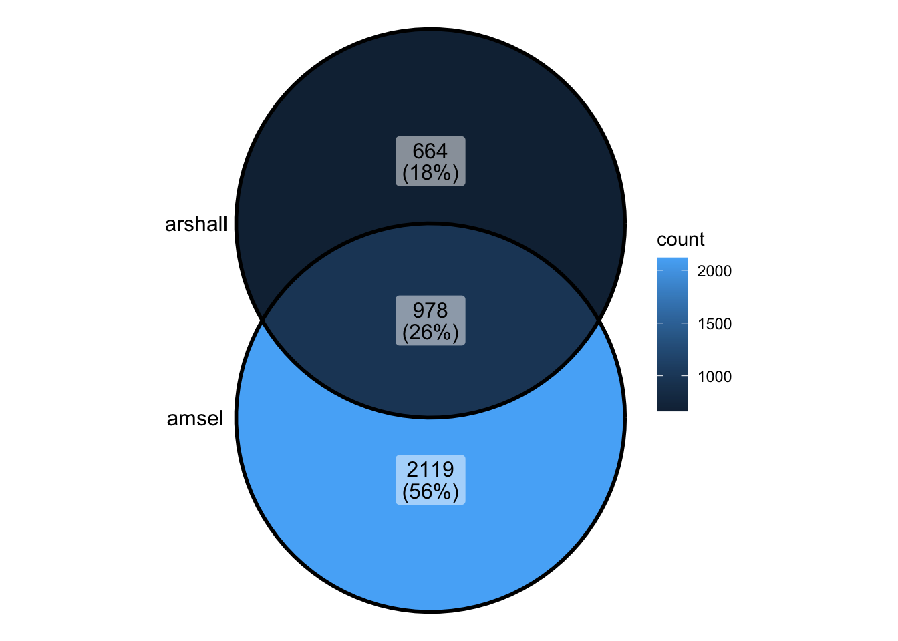
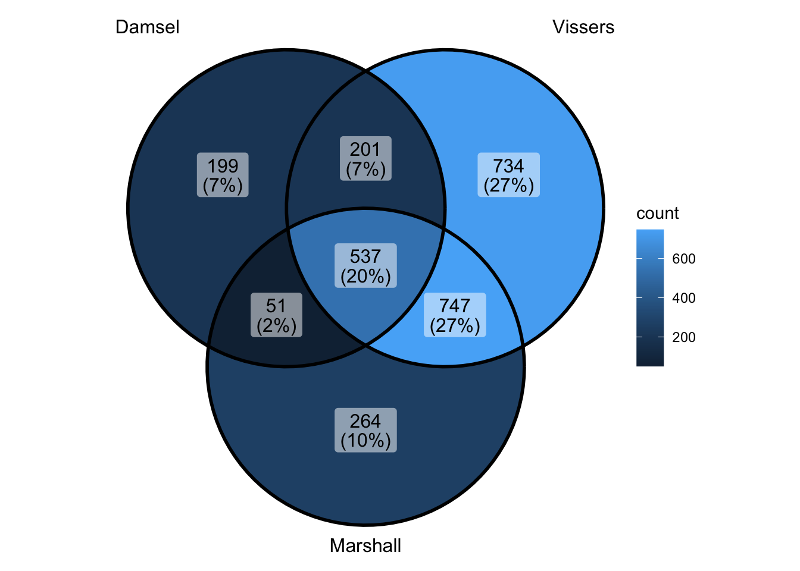
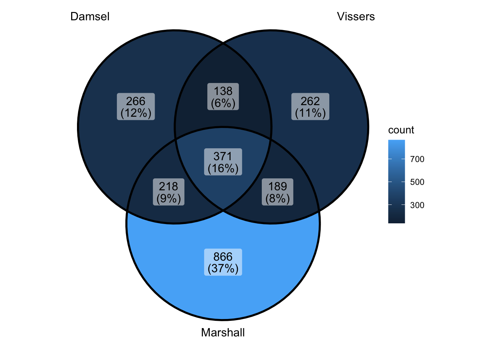

compare_peaks
caitlinpage
2024-09-04
Last updated: 2024-10-01
Checks: 7 0
Knit directory: damsel_paper/analysis/
This reproducible R Markdown analysis was created with workflowr (version 1.7.1). The Checks tab describes the reproducibility checks that were applied when the results were created. The Past versions tab lists the development history.
Great! Since the R Markdown file has been committed to the Git repository, you know the exact version of the code that produced these results.
Great job! The global environment was empty. Objects defined in the global environment can affect the analysis in your R Markdown file in unknown ways. For reproduciblity it’s best to always run the code in an empty environment.
The command set.seed(20240816) was run prior to running
the code in the R Markdown file. Setting a seed ensures that any results
that rely on randomness, e.g. subsampling or permutations, are
reproducible.
Great job! Recording the operating system, R version, and package versions is critical for reproducibility.
Nice! There were no cached chunks for this analysis, so you can be confident that you successfully produced the results during this run.
Great job! Using relative paths to the files within your workflowr project makes it easier to run your code on other machines.
Great! You are using Git for version control. Tracking code development and connecting the code version to the results is critical for reproducibility.
The results in this page were generated with repository version 73f7dc1. See the Past versions tab to see a history of the changes made to the R Markdown and HTML files.
Note that you need to be careful to ensure that all relevant files for
the analysis have been committed to Git prior to generating the results
(you can use wflow_publish or
wflow_git_commit). workflowr only checks the R Markdown
file, but you know if there are other scripts or data files that it
depends on. Below is the status of the Git repository when the results
were generated:
Ignored files:
Ignored: .DS_Store
Ignored: .Rhistory
Ignored: .Rproj.user/
Ignored: data/.DS_Store
Ignored: renv/library/
Ignored: renv/staging/
Untracked files:
Untracked: data/damsel_counts.rds
Untracked: data/damsel_counts_a.rds
Untracked: data/damsel_counts_b.rds
Untracked: data/sd_1_SRR794884-vs-Dam.kde-norm.gatc-FDR0.01.peaks.gff
Untracked: data/sd_2_SRR7948877-vs-Dam.kde-norm.gatc-FDR0.01.peaks.gff
Untracked: data/txdb_genes.rds
Untracked: output/damsel_dm.rds
Untracked: output/damsel_genes.rds
Untracked: output/damsel_peaks.rds
Untracked: output/fp_vissers_peaks.txt
Untracked: output/keep
Untracked: output/lrt_sd.txt
Untracked: output/marshall_peaks.rds
Untracked: output/peaks.txt
Untracked: output/vissers_dm.rds
Untracked: output/vissers_peaks.rds
Untracked: output/vissers_peaks.txt
Untracked: output/vissers_peaks_mod.rds
Untracked: renv/.gitignore
Unstaged changes:
Modified: code/run-Damsel.R
Modified: code/run-Vissers.R
Note that any generated files, e.g. HTML, png, CSS, etc., are not included in this status report because it is ok for generated content to have uncommitted changes.
These are the previous versions of the repository in which changes were
made to the R Markdown (analysis/compare_peaks.Rmd) and
HTML (docs/compare_peaks.html) files. If you’ve configured
a remote Git repository (see ?wflow_git_remote), click on
the hyperlinks in the table below to view the files as they were in that
past version.
| File | Version | Author | Date | Message |
|---|---|---|---|---|
| Rmd | 08944f8 | caitlinpage | 2024-10-01 | initial commit analysis |
Introduction
library(Damsel)
library(plyranges)Loading required package: BiocGenerics
Attaching package: 'BiocGenerics'The following objects are masked from 'package:stats':
IQR, mad, sd, var, xtabsThe following objects are masked from 'package:base':
anyDuplicated, aperm, append, as.data.frame, basename, cbind,
colnames, dirname, do.call, duplicated, eval, evalq, Filter, Find,
get, grep, grepl, intersect, is.unsorted, lapply, Map, mapply,
match, mget, order, paste, pmax, pmax.int, pmin, pmin.int,
Position, rank, rbind, Reduce, rownames, sapply, setdiff, table,
tapply, union, unique, unsplit, which.max, which.minLoading required package: IRangesWarning: package 'IRanges' was built under R version 4.4.1Loading required package: S4VectorsWarning: package 'S4Vectors' was built under R version 4.4.1Loading required package: stats4
Attaching package: 'S4Vectors'The following object is masked from 'package:utils':
findMatchesThe following objects are masked from 'package:base':
expand.grid, I, unnameLoading required package: GenomicRangesLoading required package: GenomeInfoDb
Attaching package: 'plyranges'The following object is masked from 'package:IRanges':
sliceThe following object is masked from 'package:stats':
filterlibrary(dplyr)
Attaching package: 'dplyr'The following objects are masked from 'package:plyranges':
between, n, n_distinctThe following objects are masked from 'package:GenomicRanges':
intersect, setdiff, unionThe following object is masked from 'package:GenomeInfoDb':
intersectThe following objects are masked from 'package:IRanges':
collapse, desc, intersect, setdiff, slice, unionThe following objects are masked from 'package:S4Vectors':
first, intersect, rename, setdiff, setequal, unionThe following objects are masked from 'package:BiocGenerics':
combine, intersect, setdiff, unionThe following objects are masked from 'package:stats':
filter, lagThe following objects are masked from 'package:base':
intersect, setdiff, setequal, unionlibrary(tidyr)
Attaching package: 'tidyr'The following object is masked from 'package:S4Vectors':
expandlibrary(ggplot2)
library(BSgenome.Dmelanogaster.UCSC.dm6)Loading required package: BSgenomeLoading required package: BiostringsLoading required package: XVector
Attaching package: 'Biostrings'The following object is masked from 'package:base':
strsplitLoading required package: BiocIOLoading required package: rtracklayer
Attaching package: 'rtracklayer'The following object is masked from 'package:BiocIO':
FileForFormatlibrary(TxDb.Dmelanogaster.UCSC.dm6.ensGene)Loading required package: GenomicFeaturesLoading required package: AnnotationDbiLoading required package: BiobaseWelcome to Bioconductor
Vignettes contain introductory material; view with
'browseVignettes()'. To cite Bioconductor, see
'citation("Biobase")', and for packages 'citation("pkgname")'.
Attaching package: 'AnnotationDbi'The following object is masked from 'package:dplyr':
selectThe following object is masked from 'package:plyranges':
selectlibrary(org.Dm.eg.db)library(ggVennDiagram)
Attaching package: 'ggVennDiagram'The following object is masked from 'package:tidyr':
unitelibrary(rtracklayer)Compare Damsel and Vissers
damsel_peaks <- readRDS("../output/damsel_peaks.rds")
vissers_peaks <- readRDS("../output/vissers_peaks.rds")
vissers_peaks_mod <- readRDS("../output/vissers_peaks_mod.rds")nrow(damsel_peaks)[1] 3120nrow(vissers_peaks)[1] 2286- Visser’s peaks had to be modified in order to be usable (missing chromosome name)
- They also do not contain a p value - making it difficult to rank peaks and identify the most significant
vissers_peaks_mod$peak_num <- 1:nrow(vissers_peaks_mod)
vissers_peaks_mod$Position <- paste0(vissers_peaks_mod$seqnames, "-", vissers_peaks_mod$start)peak_all <- union_ranges(as_granges(damsel_peaks), as_granges(vissers_peaks_mod)) %>%
data.frame() %>% mutate(compare_num = 1:n())
peak_compare_damsel <- find_overlaps(as_granges(peak_all), as_granges(damsel_peaks)) %>% data.frame()
peak_compare_vissers <- find_overlaps(as_granges(peak_all), as_granges(vissers_peaks_mod)) %>% data.frame()venn_data <- list(Damsel = peak_compare_damsel$compare_num, Vissers = peak_compare_vissers$compare_num)
ggVennDiagram(venn_data)
Compare Damsel and Marshall
marshall_peaks_1 <- rtracklayer::import("../data/sd_1_SRR794884-vs-Dam.kde-norm.gatc-FDR0.01.peaks.gff")
marshall_peaks_2 <- rtracklayer::import("../data/sd_2_SRR7948877-vs-Dam.kde-norm.gatc-FDR0.01.peaks.gff")
marshall_peaks <- readRDS("../output/marshall_peaks.rds")head(marshall_peaks_1)GRanges object with 6 ranges and 5 metadata columns:
seqnames ranges strand | source type score phase
<Rle> <IRanges> <Rle> | <factor> <factor> <numeric> <integer>
[1] 2L 71990-73420 * | NA NA 1.99 <NA>
[2] 2L 128081-131214 * | NA NA 2.10 <NA>
[3] 2L 153858-155437 * | NA NA 2.13 <NA>
[4] 2L 178291-180711 * | NA NA 2.64 <NA>
[5] 2L 454087-456365 * | NA NA 1.28 <NA>
[6] 2L 1054665-1056694 * | NA NA 2.11 <NA>
FDR
<character>
[1] 0.00722203739243461
[2] 9.74130844090044e-05
[3] 0.00722203739243461
[4] 4.98769409283497e-07
[5] 0.000523003066327455
[6] 1.42029958212876e-08
-------
seqinfo: 7 sequences from an unspecified genome; no seqlengthshead(marshall_peaks_2)GRanges object with 6 ranges and 5 metadata columns:
seqnames ranges strand | source type score phase
<Rle> <IRanges> <Rle> | <factor> <factor> <numeric> <integer>
[1] 2L 65673-67905 * | NA NA 2.16 <NA>
[2] 2L 71492-76602 * | NA NA 3.11 <NA>
[3] 2L 93377-95662 * | NA NA 2.42 <NA>
[4] 2L 107819-110289 * | NA NA 1.41 <NA>
[5] 2L 125703-131214 * | NA NA 3.25 <NA>
[6] 2L 153858-155609 * | NA NA 3.26 <NA>
FDR
<character>
[1] 0.000144173134011161
[2] 1.01370808975688e-06
[3] 1.32989250846386e-05
[4] 1.32989250846386e-05
[5] 6.29805566732406e-07
[6] 0.000828993724568052
-------
seqinfo: 6 sequences from an unspecified genome; no seqlengths- Marshall peaks had to be compiled in order to be analysed
peak_all <- union_ranges(as_granges(damsel_peaks), as_granges(marshall_peaks)) %>%
data.frame() %>% mutate(compare_num = 1:n())
peak_compare_damsel <- find_overlaps(as_granges(peak_all), as_granges(damsel_peaks)) %>% data.frame()
peak_compare_marshall <- find_overlaps(as_granges(peak_all), as_granges(marshall_peaks)) %>% data.frame()venn_data <- list(Damsel = peak_compare_damsel$compare_num, Marshall = peak_compare_marshall$compare_num)
ggVennDiagram(venn_data)
Compare all 3 approaches
peak_all <- union_ranges(union_ranges(as_granges(damsel_peaks), as_granges(vissers_peaks_mod)), as_granges(marshall_peaks)) %>% data.frame() %>%
mutate(compare_num = 1:n()) %>% as_granges()
peak_compare_damsel <- find_overlaps(as_granges(peak_all), as_granges(damsel_peaks), maxgap = 150) %>% data.frame()
peak_compare_vissers <- find_overlaps(as_granges(peak_all), as_granges(vissers_peaks_mod), maxgap = 150) %>% data.frame()
peak_compare_marshall <- find_overlaps(as_granges(peak_all), as_granges(marshall_peaks), maxgap = 150) %>% data.frame()
venn_data <- list(Damsel = peak_compare_damsel$compare_num, Vissers = peak_compare_vissers$compare_num,
Marshall = peak_compare_marshall$compare_num)
ggVennDiagram(venn_data)
- so overlap and fp is both worse than it used to be…
- but actually numbers are pretty similar to what I had - they’ve just changed slightly -worst part is damsel has about 200 extra with no overlap
- is it the lowest ranked?? - because I could accept that
peak_all <- union_ranges(union_ranges(as_granges(damsel_peaks[1:1000,]), as_granges(vissers_peaks_mod)), as_granges(marshall_peaks)) %>% data.frame() %>%
mutate(compare_num = 1:n()) %>% as_granges()
peak_compare_damsel <- find_overlaps(as_granges(peak_all), as_granges(damsel_peaks), maxgap = 150) %>% data.frame()
peak_compare_vissers <- find_overlaps(as_granges(peak_all), as_granges(vissers_peaks_mod), maxgap = 150) %>% data.frame()
peak_compare_marshall <- find_overlaps(as_granges(peak_all), as_granges(marshall_peaks), maxgap = 150) %>% data.frame()
venn_data <- list(Damsel = peak_compare_damsel$compare_num, Vissers = peak_compare_vissers$compare_num,
Marshall = peak_compare_marshall$compare_num)
ggVennDiagram(venn_data) - ok if i did that right - that says that limiting to top 1000 doesn’t
change overlap - and actually makes things quite nice - oh but wait -
didn’t limit to top 1000 when going back
- ok if i did that right - that says that limiting to top 1000 doesn’t
change overlap - and actually makes things quite nice - oh but wait -
didn’t limit to top 1000 when going back
peak_all <- union_ranges(union_ranges(as_granges(damsel_peaks[1:1000,]), as_granges(vissers_peaks_mod)), as_granges(marshall_peaks)) %>% data.frame() %>%
mutate(compare_num = 1:n()) %>% as_granges()
peak_compare_damsel <- find_overlaps(as_granges(peak_all), as_granges(damsel_peaks[1:1000,]), maxgap = 150) %>% data.frame()
peak_compare_vissers <- find_overlaps(as_granges(peak_all), as_granges(vissers_peaks_mod), maxgap = 150) %>% data.frame()
peak_compare_marshall <- find_overlaps(as_granges(peak_all), as_granges(marshall_peaks), maxgap = 150) %>% data.frame()
venn_data <- list(Damsel = peak_compare_damsel$compare_num, Vissers = peak_compare_vissers$compare_num,
Marshall = peak_compare_marshall$compare_num)
ggVennDiagram(venn_data) - ok that makes the overlap look less good - makes vissers look better - but also makes vissers look worse - because they have more by themselves - but this one is more correct way of doing if want it this way -omg of course vissers and marshall are more similar to each other - they’re not doing any kind of sample pairing
peak_all <- union_ranges(union_ranges(as_granges(damsel_peaks[1:1000,]), as_granges(vissers_peaks_mod[1:1000,])), as_granges(marshall_peaks)) %>% data.frame() %>%
mutate(compare_num = 1:n()) %>% as_granges()
peak_compare_damsel <- find_overlaps(as_granges(peak_all), as_granges(damsel_peaks[1:1000,]), maxgap = 150) %>% data.frame()
peak_compare_vissers <- find_overlaps(as_granges(peak_all), as_granges(vissers_peaks_mod[1:1000,]), maxgap = 150) %>% data.frame()
peak_compare_marshall <- find_overlaps(as_granges(peak_all), as_granges(marshall_peaks), maxgap = 150) %>% data.frame()
venn_data <- list(Damsel = peak_compare_damsel$compare_num, Vissers = peak_compare_vissers$compare_num,
Marshall = peak_compare_marshall$compare_num)
ggVennDiagram(venn_data) - ok can’t really do this because vissers is not ranked - does make it look interesting though - seems as if marshall is in the lower ranked vissers anyway
peak_all <- union_ranges(union_ranges(as_granges(damsel_peaks[1:1000,]), as_granges(vissers_peaks_mod[1:1000,])), as_granges(marshall_peaks[1:1000,])) %>% data.frame() %>%
mutate(compare_num = 1:n()) %>% as_granges()
peak_compare_damsel <- find_overlaps(as_granges(peak_all), as_granges(damsel_peaks[1:1000,]), maxgap = 150) %>% data.frame()
peak_compare_vissers <- find_overlaps(as_granges(peak_all), as_granges(vissers_peaks_mod[1:1000,]), maxgap = 150) %>% data.frame()
peak_compare_marshall <- find_overlaps(as_granges(peak_all), as_granges(marshall_peaks[1:1000,]), maxgap = 150) %>% data.frame()
venn_data <- list(Damsel = peak_compare_damsel$compare_num, Vissers = peak_compare_vissers$compare_num,
Marshall = peak_compare_marshall$compare_num)
ggVennDiagram(venn_data)
peak_all <- union_ranges(union_ranges(as_granges(damsel_peaks[1:1000,]), as_granges(vissers_peaks_mod)), as_granges(marshall_peaks[1:1000,])) %>% data.frame() %>%
mutate(compare_num = 1:n()) %>% as_granges()
peak_compare_damsel <- find_overlaps(as_granges(peak_all), as_granges(damsel_peaks[1:1000,]), maxgap = 150) %>% data.frame()
peak_compare_vissers <- find_overlaps(as_granges(peak_all), as_granges(vissers_peaks_mod), maxgap = 150) %>% data.frame()
peak_compare_marshall <- find_overlaps(as_granges(peak_all), as_granges(marshall_peaks[1:1000,]), maxgap = 150) %>% data.frame()
venn_data <- list(Damsel = peak_compare_damsel$compare_num, Vissers = peak_compare_vissers$compare_num,
Marshall = peak_compare_marshall$compare_num)
ggVennDiagram(venn_data)
sessionInfo()R Under development (unstable) (2024-01-17 r85813)
Platform: x86_64-apple-darwin20
Running under: macOS Sonoma 14.1.1
Matrix products: default
BLAS: /Library/Frameworks/R.framework/Versions/4.4-x86_64/Resources/lib/libRblas.0.dylib
LAPACK: /Library/Frameworks/R.framework/Versions/4.4-x86_64/Resources/lib/libRlapack.dylib; LAPACK version 3.12.0
locale:
[1] en_US.UTF-8/en_US.UTF-8/en_US.UTF-8/C/en_US.UTF-8/en_US.UTF-8
time zone: Australia/Melbourne
tzcode source: internal
attached base packages:
[1] stats4 stats graphics grDevices datasets utils methods
[8] base
other attached packages:
[1] ggVennDiagram_1.5.2
[2] org.Dm.eg.db_3.19.1
[3] TxDb.Dmelanogaster.UCSC.dm6.ensGene_3.12.0
[4] GenomicFeatures_1.56.0
[5] AnnotationDbi_1.66.0
[6] Biobase_2.64.0
[7] BSgenome.Dmelanogaster.UCSC.dm6_1.4.1
[8] BSgenome_1.72.0
[9] rtracklayer_1.64.0
[10] BiocIO_1.14.0
[11] Biostrings_2.72.1
[12] XVector_0.44.0
[13] ggplot2_3.5.1
[14] tidyr_1.3.1
[15] dplyr_1.1.4
[16] plyranges_1.24.0
[17] GenomicRanges_1.56.1
[18] GenomeInfoDb_1.40.1
[19] IRanges_2.38.1
[20] S4Vectors_0.42.1
[21] BiocGenerics_0.50.0
[22] Damsel_1.0.0
[23] workflowr_1.7.1
loaded via a namespace (and not attached):
[1] DBI_1.2.3 bitops_1.0-8
[3] rlang_1.1.3 magrittr_2.0.3.9000
[5] git2r_0.33.0 matrixStats_1.3.0
[7] compiler_4.4.0 RSQLite_2.3.7
[9] getPass_0.2-4 png_0.1-8
[11] callr_3.7.6 vctrs_0.6.5
[13] stringr_1.5.1.9000 pkgconfig_2.0.3
[15] crayon_1.5.3 fastmap_1.2.0
[17] labeling_0.4.3 utf8_1.2.4
[19] Rsamtools_2.20.0 promises_1.3.0
[21] rmarkdown_2.27 UCSC.utils_1.0.0
[23] ps_1.7.6 purrr_1.0.2
[25] bit_4.0.5 xfun_0.44
[27] zlibbioc_1.50.0 cachem_1.1.0
[29] jsonlite_1.8.8 blob_1.2.4
[31] highr_0.10 later_1.3.2
[33] DelayedArray_0.30.1 BiocParallel_1.38.0
[35] parallel_4.4.0 R6_2.5.1
[37] bslib_0.7.0 stringi_1.8.4
[39] jquerylib_0.1.4 Rcpp_1.0.12
[41] SummarizedExperiment_1.34.0 knitr_1.46
[43] httpuv_1.6.15 Matrix_1.7-0
[45] tidyselect_1.2.1 rstudioapi_0.16.0
[47] abind_1.4-5 yaml_2.3.8
[49] codetools_0.2-20 curl_5.2.1
[51] processx_3.8.4 lattice_0.22-6
[53] tibble_3.2.1 withr_3.0.1
[55] KEGGREST_1.44.1 evaluate_0.23
[57] pillar_1.9.0 BiocManager_1.30.23
[59] MatrixGenerics_1.16.0 whisker_0.4.1
[61] renv_1.0.7 generics_0.1.3
[63] rprojroot_2.0.4 RCurl_1.98-1.16
[65] munsell_0.5.1 scales_1.3.0
[67] glue_1.7.0 tools_4.4.0
[69] GenomicAlignments_1.40.0 fs_1.6.4
[71] XML_3.99-0.17 grid_4.4.0
[73] colorspace_2.1-1 GenomeInfoDbData_1.2.12
[75] restfulr_0.0.15 cli_3.6.2
[77] fansi_1.0.6 S4Arrays_1.4.1
[79] gtable_0.3.5 sass_0.4.9
[81] digest_0.6.35 SparseArray_1.4.8
[83] farver_2.1.2 rjson_0.2.21
[85] memoise_2.0.1 htmltools_0.5.8.1
[87] lifecycle_1.0.4 httr_1.4.7
[89] bit64_4.0.5